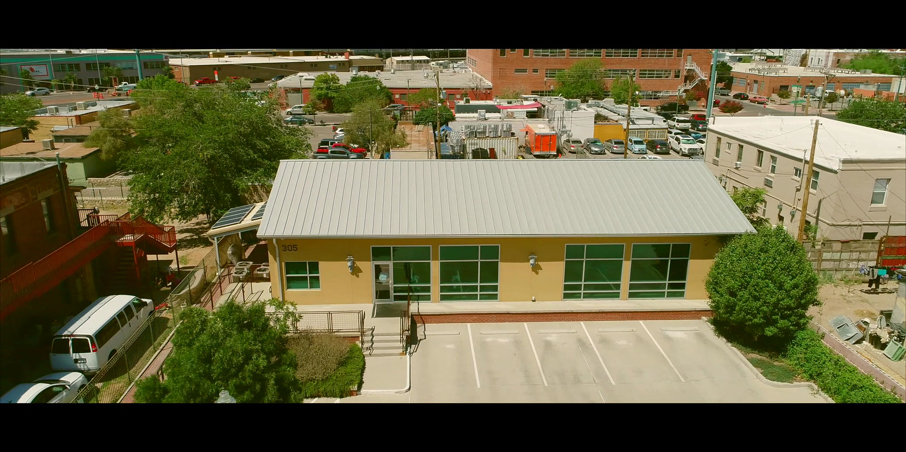
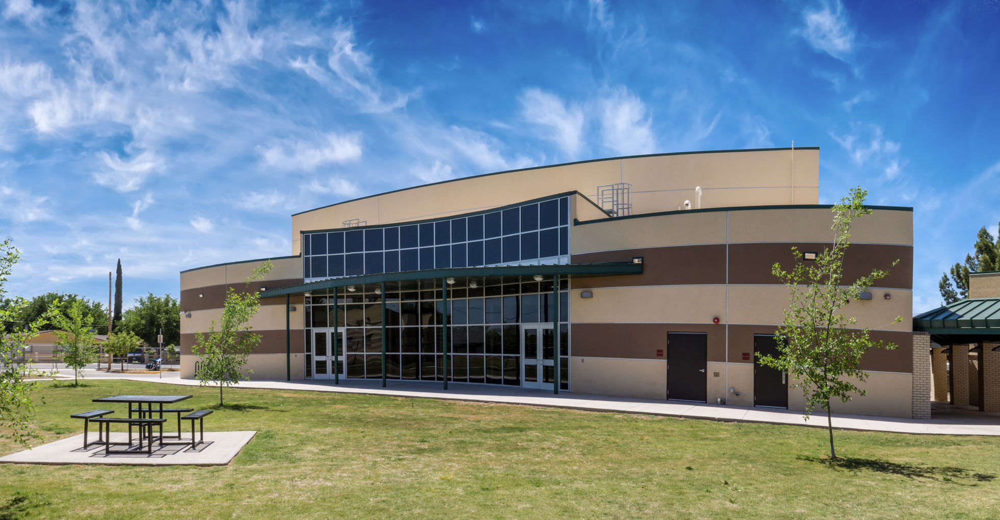
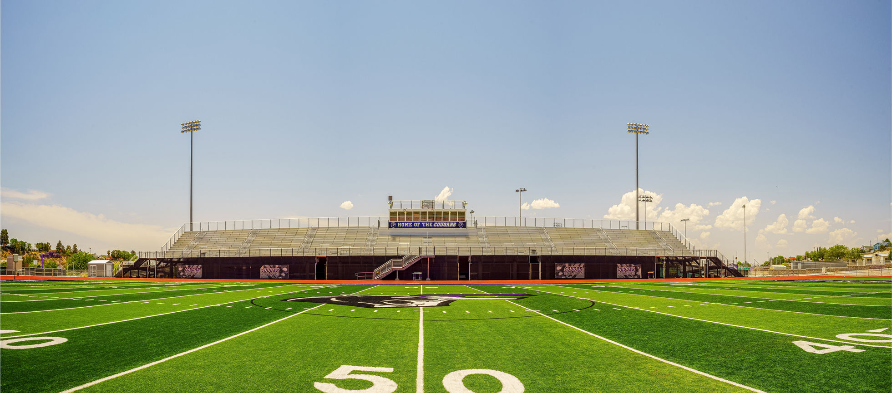

Drone Photography & Videography Tips
When I first started exploring aerial photography, I quickly realized how much drone media benefits could transform the way we capture and share visuals.

When I first started exploring aerial photography, I quickly realized how much drone media benefits could transform the way we capture and share visuals. The ability to soar above landscapes and buildings offers a fresh perspective that traditional photography simply cannot match. Whether you’re a business owner, a creative professional, or just someone who loves stunning visuals, understanding the power of drone media is essential.
In this post, I’ll walk you through the key advantages of using drones for photography and videography. I’ll also share practical tips on how to get the most out of this technology. By the end, you’ll see why drone media is not just a trend but a game-changer in visual storytelling.
Why Drone Media Benefits Matter
Drone media benefits go beyond just capturing pretty pictures from the sky. They open up new creative possibilities and practical uses that can elevate your projects in meaningful ways. Here are some of the most important benefits I’ve experienced:
- Unique Perspectives: Drones allow you to capture angles and views that are impossible from the ground. This can make your visuals stand out and grab attention.
- Cost-Effective Aerial Shots: Hiring a helicopter or plane for aerial shots is expensive. Drones provide a budget-friendly alternative without sacrificing quality.
- Versatility: Whether you’re shooting real estate, events, landscapes, or commercial projects, drones adapt easily to different environments.
- Efficiency: Drones can cover large areas quickly, saving time on shoots and allowing for more creative experimentation.
- High-Quality Footage: Modern drones come equipped with advanced cameras capable of shooting in 4K and beyond, ensuring crisp, professional results.
These benefits combine to make drone media an invaluable tool for anyone serious about visual content.

How to Maximize Drone Media Benefits
To truly harness the power of drone media, you need to approach it with a clear plan and the right techniques. Here are some actionable recommendations based on my experience:
- Plan Your Shots: Before flying, map out the locations and angles you want to capture. This saves time and helps you focus on getting the best footage.
- Check Local Regulations: Always ensure you’re flying legally. Many areas have specific rules about drone use, including no-fly zones and altitude limits.
- Use the Right Equipment: Invest in a drone with a good camera and stable flight controls. Accessories like ND filters can improve image quality in bright conditions.
- Practice Smooth Movements: Jerky or fast drone movements can ruin footage. Practice slow, steady flights to capture cinematic shots.
- Edit Thoughtfully: Post-production is where your footage really comes to life. Use editing software to enhance colors, stabilize shots, and create compelling narratives.
By following these steps, you’ll get the most out of your drone media projects and produce visuals that truly impress.
Exploring Creative Possibilities
One of the most exciting aspects of drone media is the creative freedom it offers. I’ve found that drones inspire new ideas and approaches that wouldn’t be possible otherwise. Here are some creative ways to use drone photography and videography:
- Storytelling Through Movement: Use drone flights to guide viewers through a scene, creating a sense of journey and discovery.
- Symmetry and Patterns: Capture geometric shapes and patterns from above, such as crop fields, city grids, or architectural details.
- Time-Lapse and Hyperlapse: Combine drone footage with time-lapse techniques to show changes over time from a unique vantage point.
- Event Coverage: Drones provide dynamic shots of weddings, festivals, and sports events, adding excitement and scale.
- Nature and Wildlife: Get close to natural landscapes and wildlife habitats without disturbing them, capturing breathtaking scenes.
These creative uses highlight how drone media benefits extend beyond technical advantages to inspire artistic expression.

Practical Applications of Drone Media Benefits
Beyond creativity, drone media has practical applications that can enhance various industries and projects. Here are some examples where I’ve seen drones make a real difference:
- Real Estate Marketing: Aerial shots showcase properties and their surroundings, helping buyers get a better sense of space and location.
- Construction Monitoring: Drones provide up-to-date views of construction sites, improving project management and safety.
- Agriculture: Farmers use drones to monitor crops, assess health, and optimize irrigation.
- Tourism Promotion: Stunning aerial footage attracts visitors by highlighting natural beauty and landmarks.
- Inspection and Maintenance: Drones inspect roofs, bridges, and infrastructure, reducing risk and cost.
These practical benefits demonstrate how drone media is not just for creatives but also a valuable tool for business and industry.
Getting Started with Drone Media
If you’re ready to dive into drone media, here’s a simple roadmap to get you started confidently:
- Research and Choose Your Drone: Look for models that fit your budget and needs. Popular beginner-friendly drones include DJI Mini 3 Pro and DJI Air 2S.
- Learn the Basics: Take time to understand drone controls, safety protocols, and local laws.
- Practice Regularly: Spend time flying in open areas to build your skills before tackling complex shoots.
- Experiment with Settings: Try different camera modes, angles, and flight paths to discover what works best.
- Consider Professional Help: If you want top-tier results, partnering with experts in drone photography and videography can be a smart move.
Starting with a solid foundation will help you avoid common pitfalls and enjoy the full benefits of drone media.
Embracing the Future of Visual Storytelling
The rise of drone media benefits signals a shift in how we create and consume visual content. As technology advances, drones will become even more accessible and capable. I’m excited to see how this will open new doors for storytelling, marketing, and creative expression.
Whether you’re capturing breathtaking landscapes or enhancing your business visuals, drones offer a powerful way to elevate your work. By embracing this technology, you’re not just keeping up with trends—you’re setting yourself apart with fresh, compelling imagery.
If you haven’t explored drone media yet, now is the perfect time to start. The sky is literally the limit.

I hope this guide helps you understand the incredible potential of drone media benefits. With the right approach, you can create visuals that captivate and inspire. Happy flying!
More articles
When Aerial Visuals Add Real Value
Drone photography is strongest when it explains scale, context, or movement that ground-level photography cannot show. For architecture, it can reveal how a building sits within a site, how parking and circulation work, or how a development relates to nearby streets and landmarks. For hospitality and commercial brands, aerial visuals can establish location, atmosphere, and arrival experience. For construction and institutional projects, drone media can support documentation, progress reports, and stakeholder communication. The key is to plan aerial work around a specific purpose instead of treating it as a novelty. A good aerial image should help the viewer understand something important more quickly.
Planning Drone Images for Commercial Use
Aerial photography is strongest when it solves a communication problem. For real estate, architecture, construction, hospitality, and civic projects, a drone image can show scale, access, context, and relationship to the surrounding environment in a way ground-level photography cannot. The most useful aerial set usually includes more than one beautiful wide shot. It should include establishing images, directional views, detail passes, approach angles, vertical mapping-style compositions, and clean hero frames that can support websites, proposals, social campaigns, investor updates, and press releases.
Preparation makes the difference between a quick flight and a professional deliverable. Light direction, sun angle, airspace, weather, property access, people on site, safety boundaries, and FAA requirements should all be considered before the shoot. For construction and development work, repeatable camera positions can help teams compare progress over time. For architecture and hospitality, timing the shoot around sunrise, sunset, or clean afternoon light can make glass, landscape, entrances, and exterior materials feel more intentional. The goal is not just altitude; the goal is a perspective that makes the project easier to understand and easier to sell.
A polished aerial workflow also includes color consistency with ground photography and video. When drone images sit beside interiors, portraits, food, or brand campaign assets, they should feel like part of the same visual language. That means controlled contrast, accurate color, straightened horizons, and careful selection. A strong final gallery gives clients practical options: a dramatic hero image, clean documentation views, cropped social versions, and images with enough negative space for headlines or ad copy. That is what turns aerial photography into a real commercial asset instead of a novelty.
How to Get More Value From the Session
The most useful photography projects are planned with final placement in mind. Before booking, list the places where the images will appear: website hero sections, service pages, LinkedIn, Google Business Profile, proposals, press releases, casting submissions, printed ads, menus, or social campaigns. That simple step changes how the session should be photographed. Horizontal frames need room for headlines, vertical frames need clean subject placement for mobile, and square crops need enough breathing room to avoid cutting into the subject. When those deliverables are considered before the shoot, the final gallery gives you stronger options and reduces the need for last-minute compromises.
It also helps to think about consistency across the full brand. Color, contrast, background, wardrobe, styling, retouching, and file naming all affect how professional the final images feel once they are published. For businesses, that consistency can make a website, team page, restaurant menu, architecture portfolio, or campaign deck feel more established. For individuals, it can make a headshot, biography, speaking profile, and social presence feel aligned. The goal is to create photographs that look beautiful on their own and still work hard in the real places clients need to use them.